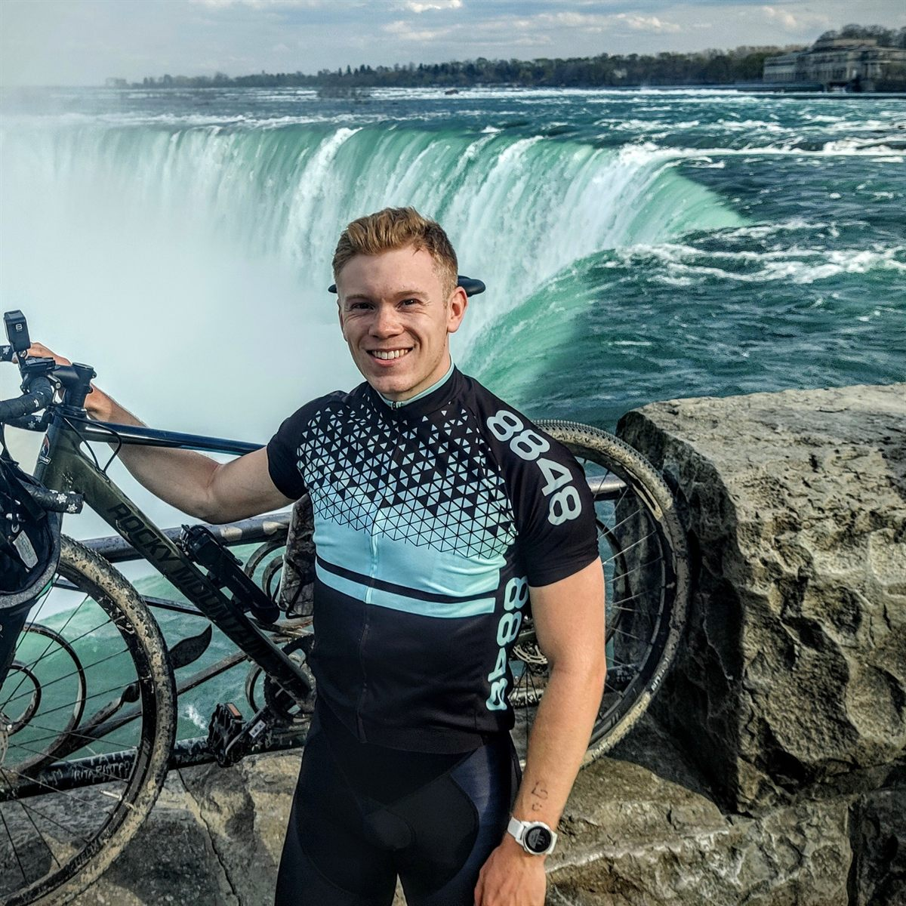
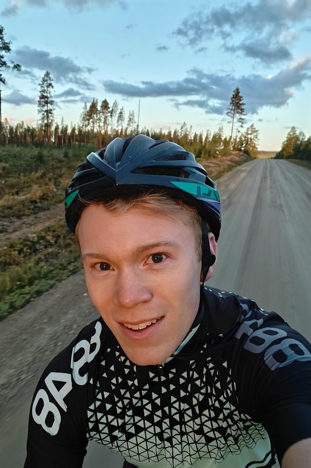

// Bikepacking Journal
My mission is to explore the Italian culture, nature, and people, while also spreading awareness of cancer research.

// About me
Currently based in Skellefteå, Sweden, I spend my days analysing electricity markets and my spare time planning this passion project: Bikepacking across Italy 2026.
I enjoy working out, learning new languages and cooking something new.
My project Italy 2026 will cover 5,000km through Italy covering Sardinia, Sicily and the mainland.
My objective is to combine challenging efforts with profound encounters with Italian people and the Italian culture.
This site is still under construction but I aim to share the ride in a convenient way here. Expect route notes, gear lists, maps pulled from Strava, and much more!

// Why Italy?
See this as a section where I try to justify my choices for my friends and relatives.
The language: Ever since I started learning Italian on my own I've been motivated to visit different parts of Italy and speak with locals.
The challenge: A challenge like this feeds me motivation and a sense of accomplishment.
The variation: Italian nature and culture is quite diverse, and I am curious to get a feel of the similarities and differences across the regions.
The mode of transport: Italian nature and culture is quite diverse across the country, and I am curious to learn the similarities and differences across the regions first-hand.
The hospitality: Italians are delighted when a foreigner speaks Italian, and can open up in a way that feels authentic.
The memories: An experience like this creates memories that I am sure I will keep close to my heart forever.
The food: Do I really need to tell you why?
The friends: When on exchange in Norway I met some Italians that I'm hoping to reunite with along the trip.
The culture: The italian culture is interesting to me, most definitively as a result of the above.
// On the road
// Latest posts
Loading…
// Around the web